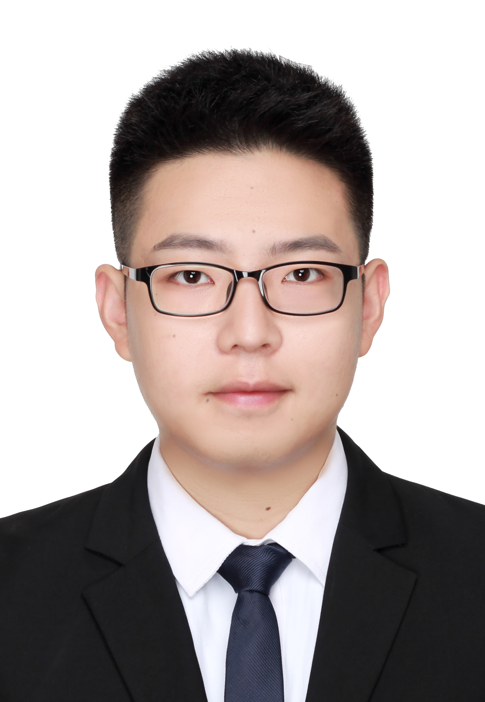
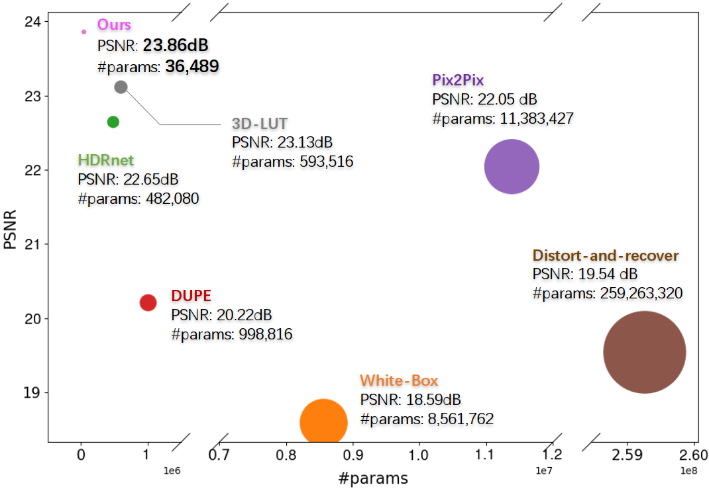
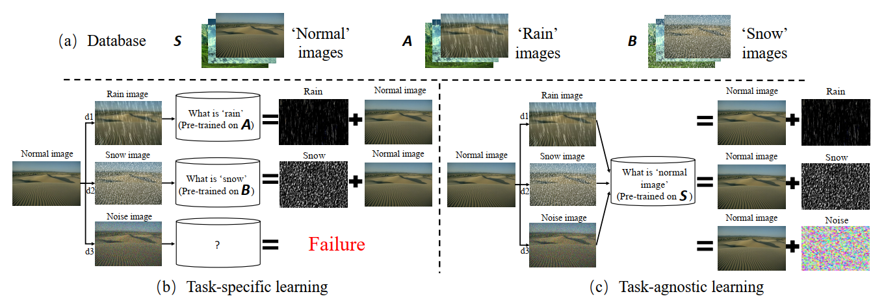
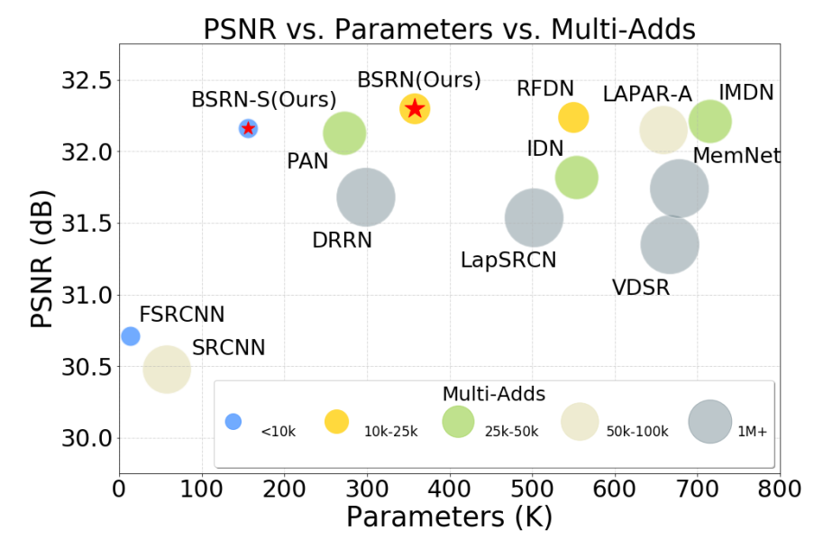
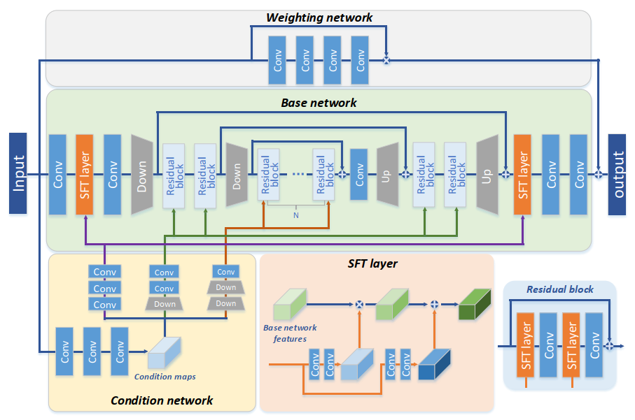

Xiangyu Chen
Xiangyu Chen
| Research Intern @ Shanghai AI Laboratory | |
Joint Ph.D Student @ UM & SIAT |
|
chxy95@gmail.com |
|
| Github Google Scholar | |
Biography
I am currently a joint PhD. student at University of Macau (UM) and Shenzhen Institute of Advanced Technology (SIAT), Chinese Academy of Sciences, supervised by Prof. Jiantao Zhou and Prof. Chao Dong. I am also a member of XPixel Group. I received my M.E. degree and B.E. degree from Northwestern Polytechnical University in 2020 and 2017.
My research interests include computer vision and computational photography. Current research topics include:
- low level vision Transformer
- Image Super-Resolution
- High Dynamic Range Imaging
News
- 2022-07: One paper was accepted to ECCV 2022.
- 2022-05: One paper was accepted to TMM 2022.
- 2022-04: Won one champion & one 3rd place & one 5th place in NTIRE 2022 Challenges.
- 2021-07: One paper was accepted to ICCV 2021.
- 2021-04: Won one 2nd place in NTIRE 2021 Challenges.
Experience
| May 2022 - Present | Research Intern at Shanghai AI Laboratory, worked with Prof. Chao Dong. |
| Jun 2019 - Aug 2021 | Research Assistant at MMLab@SIAT, worked with Prof. Chao Dong and Prof. Yu Qiao. |
| Aug 2018 - Jan 2019 | Machine Vision Algorithm Engineer at a start-up company. |
Publications





(* equal contribution, ✝ corresponding author.)
Professional Activities
- Conference Reviewer:
- IEEE Conference on Computer Vision and Pattern Recognition (CVPR)
- European Conference on Computer Vision (ECCV)
- ACM International Conference on Multimedia (ACMMM)
- Journal Reviewer:
- IEEE Transactions on Image Processing (TIP)
- IEEE Transactions on Multimedia (TMM)
- IEEE Transactions on Circuits and Systems for Video Technology (TCSVT)